Contents
Mars planar orbit optimization - round-trip
Calculate the optimal thrust to achieve a planar trajectory to the desired final orbit, assuming a certain specific impulse (exhaust velocity) and specific power for the engine.
- Mars: SMA 1.523679 AU, eccentricity 0.0934
- apehelion: 1.666 AU
- perihelion: 1.3814 AU
A good solution has a smooth change in phi and linear change in u (up until switch point, then down). If there is excess radial velocity on arrival, try increasing the transit time.
If any of the angles become near pi or -pi, the optimization gets confused. It can help to manually set these value to a neighboring value and rerun the optimization from the prior values.
With the objective gradient and restricted variable limits, solutions can be reach in about 50 iterations.
See also: PlanarHelioOptimal, SimulatePlanarHelioTrajectory, PlanetHelioPhase, StraightLineReport, OrbitRoundTripTransferTimes
%-------------------------------------------------------------------------- % Copyright 2017 Princeton Satellite Systems, Inc. % All rights reserved. %--------------------------------------------------------------------------
Setup
au = Constant('au'); year = 365.25*86400; uExhaust = 100; % km/s sigma = 1500; % W/kg eta = 0.4; % Total fusion power to thrust d = PlanarHelioOptimal; d.sigma = sigma; % specific power, W/kg d.eta = eta; % thrust efficiency d.uE = uExhaust; % exhaust velocity, km/s d.f = 0.05; % fuel structural fraction (tanks)
Return trip
Need to work backwards
payload = 40000; % payload mass (kg) nYears1 = 0.4; % transit time in years repeatPrevious = false; tRet = nYears1*year; d.r0 = 1.5*au; d.rF = 1*au; d.tF = nYears1*year; d.mP = payload; % payload mass (kg) d.scale = [1;1e3;1e3]; d.nPts = 25; if repeatPrevious [phi, thrust, t, data] = PlanarHelioOptimal( d, 4000, 'iter-detailed', thrust1, phi1 ); else [phi, thrust, t, data] = PlanarHelioOptimal( d ); end [~,x1] = SimulatePlanarHelioTrajectory( data.mD, data.mF, thrust, d.uE,... d.r0, d.rF, d.mu, phi, t ); phi1 = phi; thrust1 = thrust; data1 = data; h1 = findobj('name','Optimization PlotFcns'); set(h1,'name','Return Trip Optimization') data1.fmincon ret.dT = d.tF; ret.dTheta = data.xEnd(end); fprintf('Return trip duration: %g days\n',d.tF/86400); fprintf('Return trip angle: %g deg\n',ret.dTheta*180/pi);
266.1 33.043 30.037 1.2738 9.5497e-12
266.1 33.043 30.037 1.2738 9.5497e-12
First-order Norm of
Iter F-count f(x) Feasibility optimality step
0 53 9.744382e+04 4.096e+07 1.080e+02
1 106 5.616405e+04 1.991e+07 1.363e+02 3.886e+00
74.877 4.4377 31.784 1.1331 -1.9327e-12
2 159 5.771166e+04 5.578e+06 1.395e+02 3.295e+00
82.046 -3.6418 30.491 0.96271 -1.4779e-12
3 212 5.878346e+04 2.114e+06 1.059e+02 2.521e+00
87.011 -0.52552 31.18 0.98587 8.9813e-12
4 266 6.075749e+04 3.966e+05 3.254e+01 2.471e+00
96.155 -0.16086 30.097 1.0027 -1.4779e-12
5 320 6.134850e+04 1.131e+05 2.339e+01 2.278e+00
98.893 0.040836 29.921 0.99924 1.1369e-13
6 377 6.086170e+04 5.312e+04 1.804e+01 3.109e-01
96.638 0.032836 29.9 1.0004 -1.4779e-12
7 438 6.028753e+04 5.189e+04 1.827e+00 1.105e+00
93.978 -0.01007 29.783 0.99965 -5.6843e-13
8 501 5.992918e+04 4.547e+04 8.889e-01 8.073e-01
92.318 -0.0017671 29.778 1.0003 -6.8212e-13
9 558 5.983979e+04 2.852e+04 8.296e-01 2.293e-01
91.904 -0.033067 29.777 0.99981 -4.5475e-12
10 617 5.972577e+04 9.553e+02 5.439e-01 4.765e-01
91.376 0.0018108 29.787 1 -1.7053e-12
11 684 5.968203e+04 8.024e+02 4.633e-01 1.878e-01
91.173 -8.2819e-05 29.785 0.99999 -5.3433e-12
12 745 5.966199e+04 1.341e+02 4.198e-01 9.866e-02
91.08 -2.1476e-05 29.785 1 1.1369e-13
13 806 5.964338e+04 9.474e+01 3.734e-01 9.909e-02
90.994 -1.5655e-05 29.785 1 1.1369e-13
14 867 5.962612e+04 4.825e+01 3.479e-01 9.922e-02
90.914 -8.432e-06 29.785 1 -1.7053e-12
15 928 5.961020e+04 7.707e+00 3.105e-01 9.920e-02
90.84 9.5697e-07 29.785 1 -4.2064e-12
16 995 5.960367e+04 5.377e+00 2.946e-01 4.335e-02
90.81 8.821e-07 29.785 1 -6.7075e-12
17 1060 5.959817e+04 5.030e+00 2.869e-01 3.791e-02
90.785 8.3927e-07 29.785 1 0
18 1125 5.959353e+04 4.181e+00 2.797e-01 3.314e-02
90.763 7.0348e-07 29.785 1 5.5707e-12
19 1190 5.958960e+04 3.257e+00 2.730e-01 2.898e-02
90.745 5.5078e-07 29.785 1 1.3642e-12
20 1255 5.958626e+04 2.438e+00 2.669e-01 2.534e-02
90.73 4.1339e-07 29.785 1 4.4338e-12
21 1320 5.958342e+04 1.776e+00 2.613e-01 2.216e-02
90.716 3.0166e-07 29.785 1 3.0695e-12
22 1385 5.958100e+04 1.269e+00 2.562e-01 1.938e-02
90.705 2.1575e-07 29.785 1 5.2296e-12
23 1450 5.957892e+04 8.949e-01 2.517e-01 1.695e-02
90.696 1.5215e-07 29.785 1 -2.9559e-12
24 1515 5.957714e+04 6.242e-01 2.477e-01 1.482e-02
90.687 1.0612e-07 29.785 1 -8.5265e-12
25 1578 5.957411e+04 3.466e+00 2.404e-01 2.593e-02
90.673 5.8989e-07 29.785 1 -5.3433e-12
26 1637 5.957119e+04 3.645e+00 2.329e-01 2.591e-02
90.66 6.1952e-07 29.785 1 1.819e-12
27 1698 5.956838e+04 3.809e+00 2.251e-01 2.589e-02
90.647 6.4618e-07 29.785 1 -2.9559e-12
28 1759 5.956567e+04 3.956e+00 2.171e-01 2.587e-02
90.634 6.692e-07 29.785 1 -2.5011e-12
29 1820 5.956308e+04 4.083e+00 2.090e-01 2.585e-02
90.622 6.8822e-07 29.785 1 -4.2064e-12
30 1881 5.956059e+04 4.191e+00 2.006e-01 2.582e-02
90.611 7.0308e-07 29.785 1 -2.2737e-12
First-order Norm of
Iter F-count f(x) Feasibility optimality step
31 1942 5.955823e+04 4.280e+00 1.921e-01 2.580e-02
90.6 7.1351e-07 29.785 1 -1.4779e-12
32 2003 5.955597e+04 4.347e+00 1.834e-01 2.579e-02
90.589 7.1954e-07 29.785 1 -1.7053e-12
33 2064 5.955384e+04 4.394e+00 1.745e-01 2.577e-02
90.579 7.2076e-07 29.785 1 1.2506e-12
34 2125 5.955181e+04 4.419e+00 1.655e-01 2.575e-02
90.57 7.1715e-07 29.785 1 -7.8444e-12
35 2186 5.954991e+04 4.423e+00 1.564e-01 2.573e-02
90.561 7.0827e-07 29.785 1 5.5707e-12
36 2247 5.954813e+04 4.405e+00 1.471e-01 2.572e-02
90.553 6.9427e-07 29.785 1 -2.2737e-12
37 2308 5.954646e+04 4.364e+00 1.377e-01 2.570e-02
90.545 6.7453e-07 29.785 1 7.3896e-12
38 2369 5.954491e+04 4.300e+00 1.283e-01 2.569e-02
90.538 6.4912e-07 29.785 1 8.0718e-12
39 2430 5.954348e+04 4.213e+00 1.188e-01 2.568e-02
90.531 6.1727e-07 29.785 1 -5.3433e-12
40 2491 5.954217e+04 4.102e+00 1.092e-01 2.568e-02
90.525 5.7898e-07 29.785 1 -1.7053e-12
41 2552 5.954098e+04 3.966e+00 9.957e-02 2.568e-02
90.52 5.337e-07 29.785 1 -6.7075e-12
42 2613 5.953991e+04 3.805e+00 8.993e-02 2.568e-02
90.515 4.8093e-07 29.785 1 7.9581e-13
43 2674 5.953895e+04 3.618e+00 8.029e-02 2.569e-02
90.51 4.2041e-07 29.785 1 3.2969e-12
44 2735 5.953811e+04 3.406e+00 7.066e-02 2.571e-02
90.506 3.5157e-07 29.785 1 3.4106e-13
45 2794 5.953738e+04 3.167e+00 6.109e-02 2.573e-02
90.503 2.7425e-07 29.785 1 -4.8885e-12
46 2853 5.953676e+04 2.906e+00 5.159e-02 2.576e-02
90.5 1.8917e-07 29.785 1 7.0486e-12
47 2912 5.953624e+04 2.642e+00 4.223e-02 2.580e-02
90.498 1.0237e-07 29.785 1 -3.5243e-12
48 2977 5.953599e+04 4.499e-01 3.696e-02 1.490e-02
90.497 1.6619e-09 29.785 1 6.2528e-12
49 3042 5.953580e+04 2.821e-01 3.238e-02 1.306e-02
90.496 -5.1331e-09 29.785 1 1.2506e-12
50 3103 5.953563e+04 2.656e-01 2.788e-02 1.307e-02
90.495 -1.0348e-08 29.785 1 2.6148e-12
51 3164 5.953549e+04 2.498e-01 2.346e-02 1.308e-02
90.494 -1.5088e-08 29.785 1 5.6843e-13
52 3225 5.953537e+04 2.354e-01 1.913e-02 1.310e-02
90.494 -1.905e-08 29.785 1 1.2506e-12
53 3286 5.953527e+04 2.230e-01 1.493e-02 1.311e-02
90.493 -2.1916e-08 29.785 1 0
54 3347 5.953520e+04 2.132e-01 1.086e-02 1.312e-02
90.493 -2.3308e-08 29.785 1 -3.0695e-12
55 3408 5.953515e+04 2.076e-01 6.952e-03 1.312e-02
90.493 -2.2436e-08 29.785 1 1.5916e-12
56 3469 5.953512e+04 1.820e-01 3.397e-03 1.262e-02
90.493 -1.715e-08 29.785 1 8.0718e-12
57 3523 5.953511e+04 2.531e-02 2.335e-03 1.297e-02
90.493 -7.5195e-08 29.785 1 8.0718e-12
58 3577 5.953511e+04 8.285e-05 1.418e-03 8.309e-04
90.493 1.1864e-11 29.785 1 8.0718e-12
90.493 1.1864e-11 29.785 1 8.0718e-12
Optimization completed: The relative first-order optimality measure, 6.567609e-06,
is less than options.OptimalityTolerance = 1.000000e-05, and the relative maximum constraint
violation, 2.022469e-12, is less than options.ConstraintTolerance = 5.000000e-05.
Planar optimization results:
----------------------------
Destination: 1.0 AU
sigma: 1500 W/kg
uE: 100 km/s
eta: 0.4
f: 0.05
Duration: 146.1 days
Thrust: 90.5 N
Distance error: 0.000 km
Velocity errors: [1.18637e-11;-4.59721e-12] km/s
Payload: 40000 kg
Engine: 7541.05 kg
Dry mass: 48112.2 kg
Fuel: 11422.9 kg
Total mass: 59535.1 kg
Total DV: 21.3031 km/s
Power: 11.3116 MW
Mars Angle: 107.18 deg
Earth Angle: 144 deg
ans =
struct with fields:
iterations: 58
funcCount: 3577
constrviolation: 8.285e-05
stepsize: 0.00083095
algorithm: 'interior-point'
firstorderopt: 0.0014178
cgiterations: 149
message: 'Local minimum found that satisfies the constraints.↵↵Optimization completed because the objective function is non-decreasing in ↵feasible directions, to within the value of the optimality tolerance,↵and constraints are satisfied to within the value of the constraint tolerance.↵↵<stopping criteria details>↵↵Optimization completed: The relative first-order optimality measure, 6.567609e-06,↵is less than options.OptimalityTolerance = 1.000000e-05, and the relative maximum constraint↵violation, 2.022469e-12, is less than options.ConstraintTolerance = 5.000000e-05.'
bestfeasible: []
Return trip duration: 146.1 days
Return trip angle: 107.18 deg
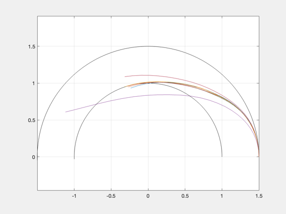  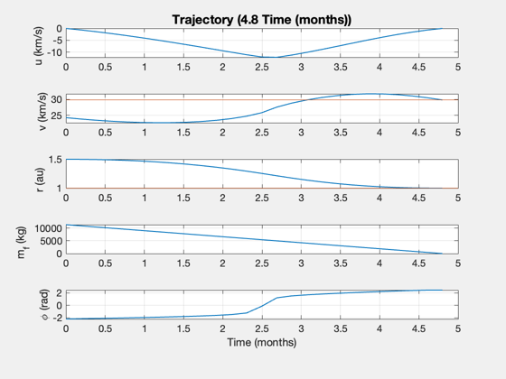 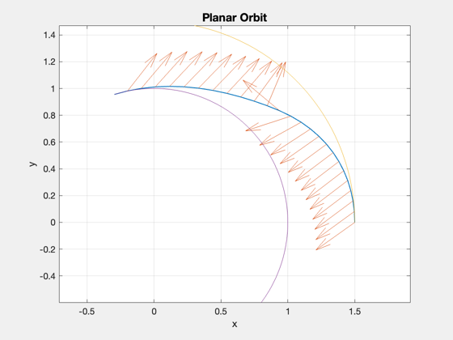
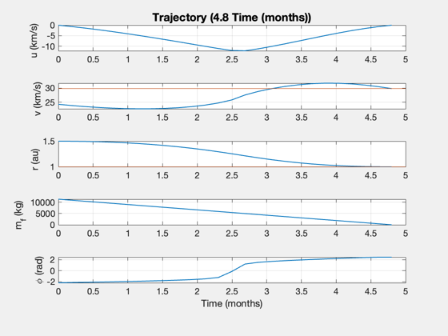 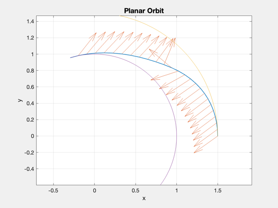 Outbound
Controls
repeatPrevious = false; % Parameters nYears2 = 0.5; % transit time in years payload = 55000; % payload + return fuel (kg) tDep = nYears2*year; d.r0 = 1*au; d.rF = 1.5*au; d.tF = tDep; d.mP = payload; % additional fields for optimization vRef = sqrt(d.mu/d.rF); d.scale = [1/d.rF*1e3;1/vRef;1/vRef]; d.scale = [1;1e3;1e3]; d.nPts = 25; % initial guess for thrust: use constant accel in limit as sigma increases % assume spacecraft leaves along the tangent to the destination distance = sqrt(abs(d.rF^2-d.r0^2)); thrustE = ThrustElectric( d.tF, distance, d.uE, 1e6, d.f, d.eta, d.mP ); fprintf('Initial guess: Thrust = %g N, power = %g MW\n',thrustE,0.5*thrustE*d.uE/d.eta*1e-3) if repeatPrevious [phi, thrust, t, data] = PlanarHelioOptimal( d, 4000, 'iter-detailed', thrust2, phi2 ); else [phi, thrust, t, data] = PlanarHelioOptimal( d ); end [~,x2] = SimulatePlanarHelioTrajectory( data.mD, data.mF, thrust, d.uE,... d.r0, d.rF, d.mu, phi, t ); phi2 = phi; thrust2 = thrust; data2 = data; h2 = findobj('name','Optimization PlotFcns'); set(h2,'name','Outbound Trip Optimization') data2.flag data2.fmincon dep.dT = d.tF; dep.dTheta = data.xEnd(end); fprintf('Outbound trip duration: %g days\n',d.tF/86400); fprintf('Outbound trip angle: %g deg\n',dep.dTheta*180/pi);
Initial guess: Thrust = 232.084 N, power = 29.0106 MW
208.77 13.162 25.076 2.495 -1.2278e-11
208.77 13.162 25.076 2.495 -1.2278e-11
First-order Norm of
Iter F-count f(x) Feasibility optimality step
0 53 1.069850e+05 1.488e+08 6.250e+01
1 106 6.962800e+04 4.868e+07 1.552e+02 6.344e+00
58.744 -1.7894 27.001 1.1746 -9.0949e-13
2 159 7.013336e+04 3.101e+07 4.377e+01 3.326e+00
60.774 -1.2358 25.634 1.2927 -2.2737e-12
3 213 6.978855e+04 3.064e+07 1.651e+01 1.325e+00
59.389 -1.4079 25.616 1.2952 -4.2064e-12
4 266 6.962342e+04 2.201e+07 1.533e+01 3.357e+00
58.726 -1.146 25.19 1.3529 -7.9581e-13
5 322 6.958405e+04 2.190e+07 3.065e+01 9.754e-01
58.568 -1.1896 25.357 1.3536 5.6843e-13
6 378 6.954829e+04 1.964e+07 4.755e+01 1.106e+00
58.424 -1.1094 25.298 1.3687 -7.9581e-13
7 431 6.962439e+04 1.652e+07 3.698e+01 2.750e+00
58.73 -0.58873 24.979 1.3896 1.4779e-12
8 485 6.969396e+04 1.597e+07 4.834e+01 1.744e+00
59.009 -0.68623 25.291 1.3932 -6.0254e-12
9 540 6.981761e+04 1.447e+07 5.037e+01 9.872e-01
59.506 -0.66973 25.229 1.4033 5.3433e-12
10 593 7.196557e+04 6.666e+06 2.819e+01 1.906e+00
68.132 -0.55705 24.552 1.4554 -4.3201e-12
11 647 7.269500e+04 1.457e+06 3.521e+00 1.620e+00
71.061 -0.18021 24.435 1.4903 4.6612e-12
12 701 7.314742e+04 7.887e+05 3.610e+00 2.289e+00
72.878 -0.10255 24.383 1.4947 -1.819e-12
13 755 7.267422e+04 3.742e+05 8.341e+00 1.896e+00
70.978 -0.044616 24.309 1.5025 -2.2737e-13
14 811 7.215890e+04 3.002e+05 1.384e+01 6.689e-01
68.908 -0.040881 24.317 1.498 -6.1391e-12
15 865 7.222338e+04 1.333e+05 1.199e+00 1.067e+00
69.167 0.014324 24.303 1.5009 1.7053e-12
16 920 7.202462e+04 2.152e+04 6.191e-01 4.071e-01
68.369 0.024993 24.3 1.5001 4.6612e-12
17 976 7.199272e+04 1.166e+04 2.982e-01 2.272e-01
68.241 0.021075 24.304 1.4999 0
18 1035 7.204391e+04 1.010e+04 1.231e-01 1.320e-01
68.446 0.001344 24.318 1.4999 1.1369e-13
19 1089 7.204992e+04 4.236e+02 4.636e-01 2.827e-01
68.471 0.00012999 24.319 1.5 6.1391e-12
20 1148 7.204879e+04 1.123e+01 2.250e-01 2.346e-01
68.466 1.5991e-05 24.319 1.5 2.2737e-13
21 1213 7.204463e+04 2.580e-01 1.486e-01 4.305e-02
68.449 -1.4768e-07 24.319 1.5 1.1369e-13
22 1280 7.204360e+04 5.749e-02 1.272e-01 1.588e-02
68.445 -2.4758e-09 24.319 1.5 -1.0232e-12
23 1343 7.204318e+04 1.040e-02 1.157e-01 7.902e-03
68.444 -6.1014e-11 24.319 1.5 -1.9327e-12
24 1406 7.204299e+04 1.508e-03 1.098e-01 3.939e-03
68.443 5.0207e-12 24.319 1.5 1.9327e-12
25 1469 7.204290e+04 1.995e-04 1.067e-01 1.966e-03
68.442 1.1443e-12 24.319 1.5 7.9581e-13
26 1532 7.204286e+04 2.539e-05 1.052e-01 9.820e-04
68.442 1.6154e-13 24.319 1.5 1.1369e-13
27 1595 7.204284e+04 3.576e-06 1.045e-01 4.908e-04
68.442 4.9516e-14 24.319 1.5 -1.9327e-12
28 1656 7.204282e+04 3.278e-06 1.037e-01 4.907e-04
68.442 3.5416e-14 24.319 1.5 -4.6612e-12
29 1717 7.204281e+04 3.874e-07 1.033e-01 2.453e-04
68.442 -2.6645e-15 24.319 1.5 -3.8654e-12
30 1778 7.204280e+04 2.086e-07 1.029e-01 2.452e-04
68.442 -2.1649e-14 24.319 1.5 -1.1369e-13
First-order Norm of
Iter F-count f(x) Feasibility optimality step
31 1841 7.204279e+04 2.980e-08 1.027e-01 1.226e-04
68.442 -6.5503e-15 24.319 1.5 3.7517e-12
32 1904 7.204279e+04 2.980e-08 1.027e-01 6.130e-05
68.442 -1.6653e-15 24.319 1.5 -3.7517e-12
33 1969 7.204279e+04 2.980e-08 1.026e-01 7.662e-06
68.442 7.3275e-15 24.319 1.5 1.1369e-13
68.442 7.3275e-15 24.319 1.5 1.1369e-13
Optimization stopped because the relative changes in all elements of x are
less than options.StepTolerance = 1.000000e-06, and the relative maximum constraint
violation, 2.002193e-16, is less than options.ConstraintTolerance = 5.000000e-05.
Planar optimization results:
----------------------------
Destination: 1.5 AU
sigma: 1500 W/kg
uE: 100 km/s
eta: 0.4
f: 0.05
Duration: 182.6 days
Thrust: 68.4 N
Distance error: 0.000 km
Velocity errors: [7.32747e-15;-3.55271e-15] km/s
Payload: 55000 kg
Engine: 5703.5 kg
Dry mass: 61243.5 kg
Fuel: 10799.3 kg
Total mass: 72042.8 kg
Total DV: 16.2403 km/s
Power: 8.55525 MW
Mars Angle: 135.941 deg
Earth Angle: 180 deg
ans =
2
ans =
struct with fields:
iterations: 34
funcCount: 1972
constrviolation: 2.9802e-08
stepsize: 2.2914e-06
algorithm: 'interior-point'
firstorderopt: 0.10264
cgiterations: 106
message: 'Local minimum possible. Constraints satisfied.↵↵fmincon stopped because the size of the current step is less than↵the value of the step size tolerance and constraints are ↵satisfied to within the value of the constraint tolerance.↵↵<stopping criteria details>↵↵Optimization stopped because the relative changes in all elements of x are↵less than options.StepTolerance = 1.000000e-06, and the relative maximum constraint↵violation, 2.002193e-16, is less than options.ConstraintTolerance = 5.000000e-05.'
bestfeasible: [1×1 struct]
Outbound trip duration: 182.625 days
Outbound trip angle: 135.941 deg
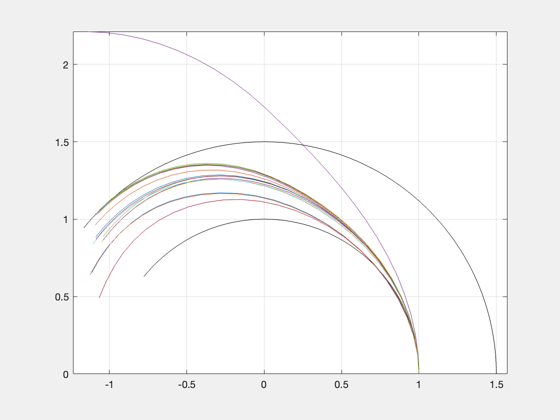 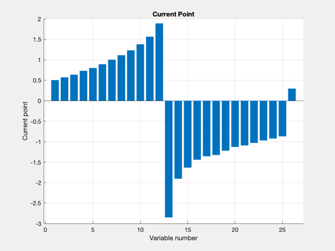 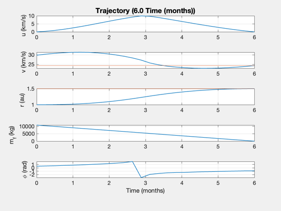 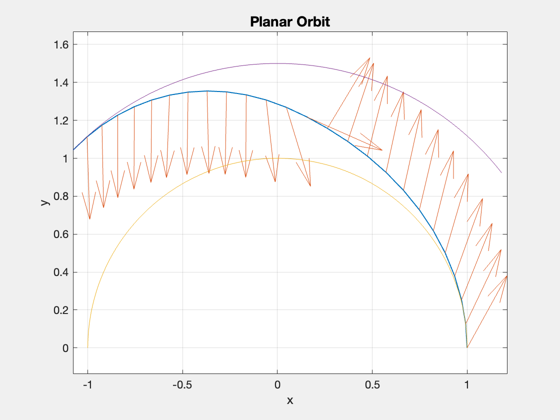 Combined results
StraightLineReport( data2 ); StraightLineReport( data1 ); jD0 = Date2JD([2014 1 1 0 0 0]); % Earth pA.theta0 = PlanetHelioPhase(3,jD0); pA.n = OrbRate( au, au, d.mu ); % Mars pB.theta0 = PlanetHelioPhase(4,jD0); pB.n = OrbRate( 1.523679*au, 1.523679*au, d.mu ); OrbitRoundTripTransferTimes( pA, pB, dep, ret ) tStay = (ret.dTheta + dep.dTheta - pA.n*(tRet+tDep))/(pA.n - pB.n); fprintf('Stay time: %g days\n',tStay/86400);
Report:
Inputs -- --
Payload 55000 kg
Travel time 0.50 years
Specific Power 1.50 kW/kg
Exhaust velocity 100 km/s
Thrust Efficiency 0.40
Fuel Fraction 0.05
Outputs -- --
Thrust 68.44 N
Total Mass 72042.79 kg
Mass Dry 61243.46 kg
Mass Engine 5703.50 kg
Mass Fuel 10799.32 kg
Flow Rate 0.68 g/s
Power 8.56 MW
Delta V 16.24 km/s
Final Distance 1.50 AU
Final Velocity 24.32 km/s
Report:
Inputs -- --
Payload 40000 kg
Travel time 0.40 years
Specific Power 1.50 kW/kg
Exhaust velocity 100 km/s
Thrust Efficiency 0.40
Fuel Fraction 0.05
Outputs -- --
Thrust 90.49 N
Total Mass 59535.11 kg
Mass Dry 48112.19 kg
Mass Engine 7541.05 kg
Mass Fuel 11422.91 kg
Flow Rate 0.90 g/s
Power 11.31 MW
Delta V 21.30 km/s
Final Distance 1.00 AU
Final Velocity 29.78 km/s
ans =
2.759e+06 7.0147e+07 1.3753e+08 2.0492e+08
Stay time: -175.213 days
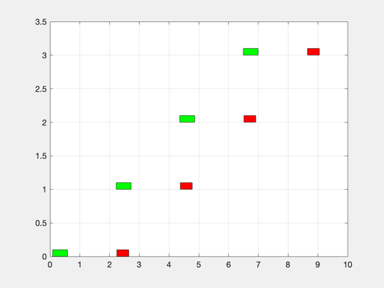 Plot
Point 0: initial time Point 1: Mars arrival Point 2: Mars departure Point 3: Earth arrival
[rE,vE] = RVFromKepler([1 0 0 0 0 0],[],d.mu); [rM,vM] = RVFromKepler([1.523679 0 0 0 0 0],[],d.mu); figure('Name','Orbits') plot(rE(1,:),rE(2,:),'b') hold on plot(rM(1,:),rM(2,:),'r') grid on axis equal % Point 0 plot(rE(1,1),rE(2,1),'bo') plot(rE(1,1),rE(2,1),'mo','markersize',10) thetaM0 = dep.dTheta - pB.n*tDep; rM0 = El2RV([1.523679 0 0 0 0 thetaM0],[],d.mu); plot(rM0(1,1),rM0(2,1),'ro') % Outbound trajectory plot(x2(1,:).*cos(x2(2,:)),x2(1,:).*sin(x2(2,:)),'b--') % Point 1 thetaE1 = pA.n*tDep; rE1 = El2RV([1 0 0 0 0 thetaE1],[],d.mu); plot(rE1(1,1),rE1(2,1),'b*') rM1 = El2RV([1.523679 0 0 0 0 dep.dTheta],[],d.mu); plot(rM1(1,1),rM1(2,1),'r*') plot(rM1(1,1),rM1(2,1),'mo','markersize',10) % Point 2 if tStay<0 tStay = 0; end thetaE2 = thetaE1 + pA.n*tStay; thetaM2 = dep.dTheta + pB.n*tStay; % Point 3 thetaE3 = thetaE2 + pA.n*tRet; thetaM3 = thetaM2 + pB.n*tRet; rE3 = El2RV([1 0 0 0 0 thetaE3],[],d.mu); plot(rE3(1,1),rE3(2,1),'bx') rM3 = El2RV([1.523679 0 0 0 0 thetaM3],[],d.mu); plot(rM3(1,1),rM3(2,1),'rx') thetaX = dep.dTheta + tStay*pB.n + ret.dTheta; rEx = El2RV([1 0 0 0 0 thetaX],[],d.mu); plot(rEx(1,1),rEx(2,1),'mx') plot(rEx(1,1),rEx(2,1),'mo','markersize',10) % Return trajectory thetaR = x1(2,:) + dep.dTheta + tStay*pB.n; plot(x1(1,:).*cos(thetaR),x1(1,:).*sin(thetaR),'r--') %return;

Comparison
Compare the solution to a straight line solution with the same parameters. Input data structure
dL = Straight2DStructure; dL.mP = 40000; % payload mass (kg) dL.dF = 1.5*au; % distance traversed, km (1 AU) dL.uE = uExhaust; % exhaust velocity, km/s dL.f = 0.05; % fuel structural fraction (tanks) % additional fields for optimization dL.sigma = sigma; % specific power, W/kg dL.eta = eta; % thrust efficiency dL.v0 = 0; % approx initial velocity (km/s) % Evaluate P0 = 50e6; tMin = ComputeDuration( P0, dL ); dL.tF = tMin; [thrustSL,data] = ComputeThrust( dL, true ); SimulateStraightLineTrajectory( data ); % text(0.15,25,sprintf('Payload: %d kg',payload)); % text(0.15,20,sprintf('Power: %.2f MW',data.p*1e-6)); % text(0.15,15,sprintf('Thrust: %.2f N',data.thrust)); % text(0.15,10,sprintf('Mass: %.0f kg',data.m0)); %-------------------------------------- % $Id: 3b154d1046fa05430b148da2b6a85c47c7eff979 $
Report:
---- INPUTS ---- -- --
Payload 40000 kg
Desired distance 224396805.00 km
Travel time 0.49 years
---- ENGINE ---- -- --
Thrust Efficiency 0.40
Exhaust velocity 100 km/s
Specific Power 1.50 kW/kg
Fuel Tank Fraction 0.05
---- OUTPUTS ---- -- --
Payload Mass Fraction 0.29 mP/m0
Payload Power Fraction 1.25 kW/kg
Delta-V 58.95 km/s
---- PAYLOAD DEPENDENT ---- -- --
Thrust 400.00 N
Power 50.00 MW
Total Mass 137750.91 kg
Mass Dry 76400.84 kg
Mass Engine 33333.33 kg
Mass Fuel 61350.07 kg
Flow Rate 4.00 g/s
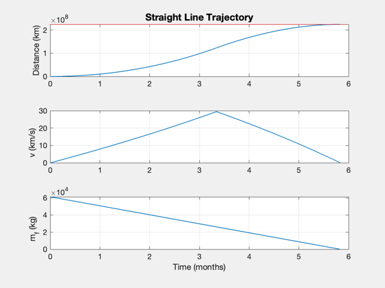